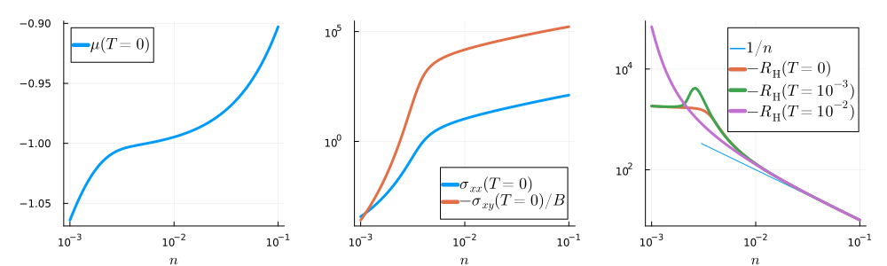

MagnetoTransport
The Julia module MagnetoTransport addresses a problem in physics: computing the linear conductivity tensor of a two-dimensional gas of electrons in a perpendicular magnetic field, the electron scattering being described by an energy-dependent, yet momentum-independent self-energy.
Definition of the problem
This problem takes as inputs a dispersion relation $E_{\mathbf{k}}$ for the noninteracting electrons, a complex self-energy function $\Sigma(\varepsilon)$ describing the scattering at energy $\varepsilon$, a density $n$ of electrons per surface unit, and a temperature $T$. The outputs are a chemical potential $\mu$, normal conductivities $\sigma_{xx}$ and $\sigma_{yy}$, and a Hall conductivity $\sigma_{xy}$. This problem is defined by the following set of coupled equations:
\[\begin{align*} (1)&&&&N_0(E)&=2\int\frac{d^2k}{(2\pi)^2}\,\delta\left(E-E_{\mathbf{k}}\right)\\ (2)&&&&\Phi_{x,y}(E)&=\left(\frac{e}{\hbar}\right)^22\int\frac{d^2k}{(2\pi)^2} \left(\frac{\partial E_{\mathbf{k}}}{\partial k_{x,y}}\right)^2 \delta(E-E_{\mathbf{k}})\\ (3)&&&&\Phi_{xy}(E)&=\left(\frac{|e|}{\hbar}\right)^3\frac{2\pi^2}{3} \int\frac{d^2k}{(2\pi)^2}\left[2\frac{\partial E_{\mathbf{k}}}{\partial k_x} \frac{\partial E_{\mathbf{k}}}{\partial k_y} \frac{\partial^2E_{\mathbf{k}}}{\partial k_x\partial k_y}\right.\\ &&&&&\hspace{11em}\left.-\left(\frac{\partial E_{\mathbf{k}}}{\partial k_x}\right)^2 \frac{\partial^2E_{\mathbf{k}}}{\partial k_y^2} -\left(\frac{\partial E_{\mathbf{k}}}{\partial k_y}\right)^2 \frac{\partial^2E_{\mathbf{k}}}{\partial k_x^2}\right]\delta(E-E_{\mathbf{k}})\\ (4)&&&&A(E,\varepsilon)&=\frac{-\mathrm{Im}\,\Sigma(\varepsilon)/\pi} {[\varepsilon-E-\mathrm{Re}\,\Sigma(\varepsilon)]^2 +[\mathrm{Im}\,\Sigma(\varepsilon)]^2}\\ (5)&&&&N(\varepsilon)&=\int_{-\infty}^{\infty}dE\,N_0(E)A(E,\varepsilon)\\ (6)&&&&n&=\int_{-\infty}^{\infty}d\varepsilon\,\frac{N(\varepsilon)} {\mathrm{e}^{(\varepsilon-\mu)/k_{\mathrm{B}}T}+1}\\ (7)&&&&\sigma_{xx,yy}&=\pi\hbar\int_{-\infty}^{\infty}d\varepsilon\, \frac{1}{k_{\mathrm{B}}T}\frac{\mathrm{e}^{(\varepsilon-\mu)/k_{\mathrm{B}}T}} {[\mathrm{e}^{(\varepsilon-\mu)/k_{\mathrm{B}}T}+1]^2} \int_{-\infty}^{\infty}dE\,\Phi_{x,y}(E)A^2(E,\varepsilon)\\ (8)&&&&\sigma_{xy}&=B\hbar\int_{-\infty}^{\infty}d\varepsilon\, \frac{1}{k_{\mathrm{B}}T}\frac{\mathrm{e}^{(\varepsilon-\mu)/k_{\mathrm{B}}T}} {[\mathrm{e}^{(\varepsilon-\mu)/k_{\mathrm{B}}T}+1]^2} \int_{-\infty}^{\infty}dE\,\Phi_{xy}(E)A^3(E,\varepsilon). \end{align*}\]
In these equations, $e$ is the elementary charge, $\hbar$ is the reduced Planck constant, $k_{\mathrm{B}}$ is the Boltzmann constant, $\delta(\cdot)$ is the Dirac delta function, and $B$ is the magnetic field. Note that these equations require the dispersion relation $E_{\mathbf{k}}$ to be twice differentiable and the function $\Sigma(\varepsilon)$ to be causal, i.e., its real and imaginary parts must obey Kramers-Kronig relations.
Formulation in terms of integral transforms
The problem can be reformulated as
\[\begin{align*} (5')&&&&N(\varepsilon)&=-\frac{1}{\pi}\,\mathrm{Im}\,(H\circ N_0) \big(\varepsilon-\Sigma(\varepsilon)\big)\\ (6')&&&&n&=\int_{-\infty}^0d\varepsilon\,N(\mu+\varepsilon) +\int_0^{\infty}d\varepsilon\,\frac{1} {\mathrm{e}^{\varepsilon/k_{\mathrm{B}}T}+1} \left[N(\mu+\varepsilon)-N(\mu-\varepsilon)\right]\\ (7')&&&&\sigma_{xx,yy}&=\frac{e^2}{h}2\pi^2\int_{-\infty}^{\infty}d\varepsilon\, \frac{1}{k_{\mathrm{B}}T}\frac{\mathrm{e}^{(\varepsilon-\mu)/k_{\mathrm{B}}T}} {[\mathrm{e}^{(\varepsilon-\mu)/k_{\mathrm{B}}T}+1]^2} (L^2\circ\Phi_0^{x,y})\big(\varepsilon,\Sigma(\varepsilon)\big)\\ (8')&&&&\sigma_{xy}&=B\frac{|e|^3}{h^2}4\pi^2 \int_{-\infty}^{\infty}d\varepsilon\, \frac{1}{k_{\mathrm{B}}T}\frac{\mathrm{e}^{(\varepsilon-\mu)/k_{\mathrm{B}}T}} {[\mathrm{e}^{(\varepsilon-\mu)/k_{\mathrm{B}}T}+1]^2} (L^3\circ\Phi_1)\big(\varepsilon,\Sigma(\varepsilon)\big), \end{align*}\]
where $h=2\pi\hbar$ is the Planck constant. The complex function of a complex variable $(H\circ N_0)(z)$ is the Hilbert transform of the function $N_0(E)$, which is defined as
\[ (H\circ N_0)(z)=\int_{-\infty}^{\infty}dE\,\frac{N_0(E)}{z-E}\]
for $z\in\mathbb{C}\setminus\mathbb{R}$. The real functions $(L^2\circ\Phi_0^{x,y})(r,z)$ and $(L^3\circ\Phi_1)(r,z)$ of one real variable $r$ and one complex variable $z$ are the order-2 and order-3 Lorentz transforms of the functions $\Phi_0^{x,y}(E)=\Phi_{x,y}(E)/(e/\hbar)^2$ and $\Phi_1(E)=\Phi_{xy}(E)/(|e|/\hbar)^3$, which are defined as
\[\begin{align*} (L^2\circ\Phi_0^{x,y})(r,z)=\int_{-\infty}^{\infty}dE\, \Phi_0^{x,y}(E)\left[\frac{-\mathrm{Im}\,z/\pi} {(r-\mathrm{Re}\,z-E)^2+(\mathrm{Im}\,z)^2}\right]^2\\ (L^3\circ\Phi_1)(r,z)=\int_{-\infty}^{\infty}dE\, \Phi_1(E)\left[\frac{-\mathrm{Im}\,z/\pi} {(r-\mathrm{Re}\,z-E)^2+(\mathrm{Im}\,z)^2}\right]^3. \end{align*}\]
In this formulation, the problem takes the four functions $(H\circ N_0)$, $(L^2\circ\Phi_0^{x,y})$, and $(L^3\circ\Phi_1)$ as inputs, instead of the dispersion relation $E_{\mathbf{k}}$. These four functions only depend on $E_{\mathbf{k}}$, not on the other inputs $\Sigma(\varepsilon)$, $n$, and $T$.
Implementation
The Julia modules Piecewise, PiecewiseHilbert, and PiecewiseLorentz provide tools for representing the functions $N_0(E)$, $\Phi_0^{x,y}(E)$, and $\Phi_1(E)$ as PiecewiseFunction objects and for constructing HilbertTransform and LorentzTransform objects holding their Hilbert and Lorentz transforms.
Inverting equation $(6')$ to determine $\mu$ is the most time-consuming part of the calculation. The first term in the right-hand side of equation $(6')$ is the value of $n$ at temperature $T=0$, while the second term is a correction only needed if $T>0$. The method number returns $n$ for a given $\mu$ and the method chemical_potential returns $\mu$ for a given $n$. If an estimate of $μ$ is available, it can be supplied using the optional keyword argument μ0. The method σ₀ returns $\sigma_{xx}$ or $\sigma_{yy}$ divided by $e^2/h$, depending on which Lorentz transform is passed as the argument L2oPhi0. The method σ₁ returns $\sigma_{xy}/B$ divided by $|e|^3/h^2$. The method RH returns the Hall constant $R_{\mathrm{H}}=\frac{\sigma_{xy}/B}{\sigma_{xx}\sigma_{yy}}$ divided by $1/|e|$. The methods σ₀, σ₁, and RH take either the density $n$ as the first argument, in which case they use chemical_potential to determine $\mu$, or take the chemical potential $\mu$ as the first argument.
Simplifications occur at $T=0$, since the integrals in equations $(7')$ and $(8')$ become trivial. The expressions $(6')$, $(7')$, and $(8')$ are replaced at $T=0$ by
\[\begin{align*} (6'')&&&&n&=\int_{-\infty}^0d\varepsilon\,N(\mu+\varepsilon)\\ (7'')&&&&\sigma_{xx,yy}&=\frac{e^2}{h}2\pi^2 (L^2\circ\Phi_0^{x,y})\big(\mu,\Sigma(\mu)\big)\\ (8'')&&&&\sigma_{xy}/B&=\frac{|e|^3}{h^2}4\pi^2 (L^3\circ\Phi_1)\big(\mu,\Sigma(\mu)\big). \end{align*}\]
Hence, thanks to the use of Hilbert and Lorentz transforms, the numerical work at $T=0$ is reduced to a single quadrature nested in a root-finding algorithm for solving equation $(6'')$, while equations $(7'')$ and $(8'')$ are straight evaluations of mathematical functions. Additional quadratures are required if $T>0$ in equations $(6')$, $(7')$ and $(8')$, but those are exponentially convergent at $|\varepsilon|=\infty$.
Example
The following example uses piecewise linear toy models for the functions $N_0(E)$, $\Phi_0^{x,y}(E)$, and $\Phi_1(E)$, that are not deduced from an underlying dispersion relation $E_{\mathbf{k}}$:
N₀ = PiecewiseFunction(:even, Piece((0, 1), POLY, [1]))
Φ₀ = PiecewiseFunction(:even, Piece((0, 1), POLY, [1, -1]))
Φ₁ = 2 * π^2 / 3 * PiecewiseFunction(:odd,
[Piece((0, 0.5), POLY, [0, 1]), Piece((0.5, 1), POLY, [1, -1])])$N_0(E)$ has the shape of a rectangle: it equals one if $-1<E<1$ and zero otherwise. $\Phi_0^x(E)=\Phi_0^y(E)$ is an even function of $E$ with the shape of a triangle, $\Phi_1(E)$ is an odd function of $E$ made of two triangles, and both of them vanish if $|E|>1$. The following code draws these functions on a graph p1:
using Plots, LaTeXStrings, Measures
E = -2:0.001:2
p1 = plot(xlabel=L"E", legend=:bottomright)
plot!(p1, E, N₀.(E), label=L"N_0(E)")
plot!(p1, E, Φ₀.(E), label=L"\Phi_0(E)")
plot!(p1, E, Φ₁.(E), label=L"\Phi_1(E)")A causal self-energy may be deduced from a scattering rate $\Gamma(E)$ according to
\[ \Sigma(\varepsilon)=\int_{-\infty}^{\infty}dE\, \frac{\Gamma(E)}{\varepsilon-E+i0^+} =(H\circ\Gamma)(\varepsilon+i0^+).\]
This expression obeys Kramers-Kronig relations by construction. $\Gamma(E)$ must be positive, such that $\mathrm{Im}\,\Sigma(\varepsilon)=-\pi\Gamma(\varepsilon)$ is negative. A toy model is used here for $\Gamma(E)$, which is an even function of $E$ vanishing as a square root at $|E|=1.5$. The following code defines $\Sigma(\varepsilon)$ and draws it on a graph p2:
HoΓ = HilbertTransform(PiecewiseFunction(:even,
Piece((0, 1.5), (true, false), PLS, [1.5, 0.5, 0.001])))
Σ(ε) = HoΓ(ε + im * eps(Float64))
p2 = plot(xlabel=L"\varepsilon", legend=:topleft)
plot!(p2, E, real.(Σ.(E)), label=L"\mathrm{Re}\,\Sigma(\varepsilon)")
plot!(p2, E, imag.(Σ.(E)), label=L"\mathrm{Im}\,\Sigma(\varepsilon)")At this point, the interacting density of states $N(\varepsilon)$ can be deduced according to equation $(5')$. The following code defines $N(\varepsilon)$, draws it on a graph p3, and displays the three graphs:
HoN₀ = HilbertTransform(N₀)
N(ε) = -imag(HoN₀(ε - Σ(ε))) / π
p3 = plot(xlabel=L"\varepsilon", legend=:bottom)
plot!(p3, E, N.(E), label=L"N(\varepsilon)")
plot(p1, p2, p3, layout=(1, 3), size = (1000, 300), margins=4mm)GKS: cannot open display - headless operation mode activeThe following code defines the LorentzTransform objects and then computes $\mu$, $\sigma_{xx}$, and $\sigma_{xy}/B$ at $T=0$ versus $n\in[10^{-3},10^{-1}]$. These data are put on the graphs p1 and p2.
L²oΦ₀ = LorentzTransform(Φ₀, 2)
L³oΦ₁ = LorentzTransform(Φ₁, 3)
n = 10 .^ (-3:0.02:-1)
μ = chemical_potential.(n, 0, HoN₀, Σ)
σxx = σ₀.(μ, 0, L²oΦ₀, Σ)
σxy = σ₁.(μ, 0, L³oΦ₁, Σ)
p1 = plot(n, μ, label=L"\mu(T=0)", xlabel=L"n", xscale=:log10)
p2 = plot(xlabel=L"n", xscale=:log10, yscale=:log10, legend=:bottomright)
plot!(p2, n, σxx, label=L"\sigma_{xx}(T=0)")
plot!(p2, n, -σxy, label=L"-\sigma_{xy}(T=0)/B")Now the values of $\sigma_{xx}$ and $\sigma_{xy}/B$ can be used to deduce the Hall constant $R_{\mathrm{H}}=\sigma_{xy}/B/\sigma_{xx}^2$. Because the scattering is weak, $R_{\mathrm{H}}$ approaches $-1/(|e|n)$ at large $n$, but deviates at low $n$, where it varies nonmonotonously with increasing temperature.
p3 = plot(xlabel=L"n", xscale=:log10, yscale=:log10)
plot!(p3, [3e-3, 1e-1], 1 ./ [3e-3, 1e-1], lw=1, label=L"1/n")
plot!(p3, n, .- σxy ./ σxx .^2, label=L"-R_\mathrm{H}(T=0)")
plot!(p3, n, .- RH.(n, 0.001, L²oΦ₀, L³oΦ₁, Σ, HoN₀, tol=1e-5),
label=L"-R_\mathrm{H}(T=10^{-3})")
plot!(p3, n, .- RH.(n, 0.01, L²oΦ₀, L³oΦ₁, Σ, HoN₀, tol=1e-5),
label=L"-R_\mathrm{H}(T=10^{-2})")
plot(p1, p2, p3, layout=(1, 3), size = (1000, 300), margins=4mm)
Public interface
Index
MagnetoTransport.RHMagnetoTransport.chemical_potentialMagnetoTransport.numberMagnetoTransport.σ₀MagnetoTransport.σ₁
Methods
MagnetoTransport.number — Functionnumber(μ, T, HoN0, Σ [, tol])Particle number for chemical potential μ and temperature T (energy units). HoN0 is a HilbertTransform object holding the Hilbert transform of the density of states. Σ(::Real) is a function giving the self-energy. tol sets the relative tolerance of the quadratures (default 1e-8).
number(μ, T, HoN0 [, tol])Particle number for chemical potential μ and temperature T (energy units) in the noninteracting case ($\Sigma(\varepsilon)=-i0^+$). HoN0 is a HilbertTransform object holding the Hilbert transform of the density of states. tol sets the relative tolerance of the quadratures (default 1e-8).
MagnetoTransport.chemical_potential — Functionchemical_potential(n, T, HoN0, Σ [, μ0] [, tol])Chemical potential for density n and temperature T (energy units). HoN0 is a HilbertTransform object holding the Hilbert transform of the density of states. Σ(::Real) is a function giving the self-energy. μ0 is an optional initial estimate. tol sets the relative tolerance of the quadratures and root finding (default 1e-8).
chemical_potential(n, T, HoN0 [, μ0] [, tol])Chemical potential for density n and temperature T (energy units) in the noninteracting case ($\Sigma(\varepsilon)=-i0^+$). HoN0 is a HilbertTransform object holding the Hilbert transform of the density of states. μ0 is an optional initial estimate. tol sets the relative tolerance of the quadratures and root finding (default 1e-8).
MagnetoTransport.σ₀ — Functionσ₀(n, T, L2oPhi0, Σ, HoN0 [, εmin] [, εmax] [, μ0] [, tol])Normal conductivity in units of $e^2/h$ for density n and temperature T (energy units). L2oPhi0 is a LorentzTransform object holding the $L^2$ transform of the transport function divided by $(e/\hbar)^2$. Σ(::Real) is a function giving the self-energy. HoN0 is a HilbertTransform object holding the Hilbert transform of the density of states. εmin and εmax are optional limits of integration at finite-$T$ (default -Inf and +Inf). μ0 is an optional initial estimate for the chemical potential. tol sets the relative tolerance of the quadratures and root finding (default 1e-8).
σ₀(μ, T, L2oPhi0, Σ [, εmin] [, εmax] [, tol])Normal conductivity in units of $e^2/h$ for chemical potential μ and temperature T (energy units). L2oPhi0 is a LorentzTransform object holding the $L^2$ transform of the transport function divided by $(e/\hbar)^2$. Σ(::Real) is a function giving the self-energy. εmin and εmax are optional limits of integration at finite-$T$ (default -Inf and +Inf). tol sets the relative tolerance of the quadrature (default 1e-8).
MagnetoTransport.σ₁ — Functionσ₁(n, T, L3oPhi1, Σ, HoN0 [, εmin] [, εmax] [, μ0] [, tol])Hall conductivity divided by $B|e|^3/h^2$ for density n and temperature T (energy units). L3oPhi1 is a LorentzTransform object holding the $L^3$ transform of the transport function divided by $(|e|/\hbar)^3$. Σ(::Real) is a function giving the self-energy. HoN0 is a HilbertTransform object holding the Hilbert transform of the density of states. εmin and εmax are optional limits of integration at finite-$T$ (default -Inf and +Inf). μ0 is an optional initial estimate for the chemical potential. tol sets the relative tolerance of the quadratures and root finding (default 1e-8).
σ₁(μ, T, L3oPhi1, Σ [, εmin] [, εmax] [, tol])Hall conductivity divided by $B|e|^3/h^2$ for chemical potential μ and temperature T (energy units). L3oPhi1 is a LorentzTransform object holding the $L^3$ transform of the transport function divided by $(|e|/\hbar)^3$. Σ(::Real) is a function giving the self-energy. εmin and εmax are optional limits of integration at finite-$T$ (default -Inf and +Inf). tol sets the relative tolerance of the quadrature (default 1e-8).
MagnetoTransport.RH — FunctionRH(n, T, L2oPhi01 [, L2oPhi02], L3oPhi1, Σ, HoN0 [, εmin] [, εmax] [, μ0] [, tol])Hall constant multiplied by $|e|$ for density n and temperature T (energy units). L2oPhi01, L2oPhi02, and L3oPhi1 are LorentzTransform objects holding the $L^2$ and $L^3$ transforms of the transport functions. Σ(::Real) is a function giving the self-energy. HoN0 is a HilbertTransform object holding the Hilbert transform of the density of states. εmin and εmax are optional limits of integration at finite-$T$ (default -Inf and +Inf). μ0 is an optional initial estimate for the chemical potential. tol sets the relative tolerance of the quadratures and root finding (default 1e-8).
RH(μ, T, L2oPhi01 [, L2oPhi02], L3oPhi1, Σ [, εmin] [, εmax] [, tol])Hall constant multiplied by $|e|$ for chemical potential μ and temperature T (energy units). L2oPhi01, L2oPhi02, and L3oPhi1 are LorentzTransform objects holding the $L^2$ and $L^3$ transforms of the transport functions. Σ(::Real) is a function giving the self-energy. εmin and εmax are optional limits of integration at finite-$T$ (default -Inf and +Inf). tol sets the relative tolerance of the quadratures (default 1e-8).